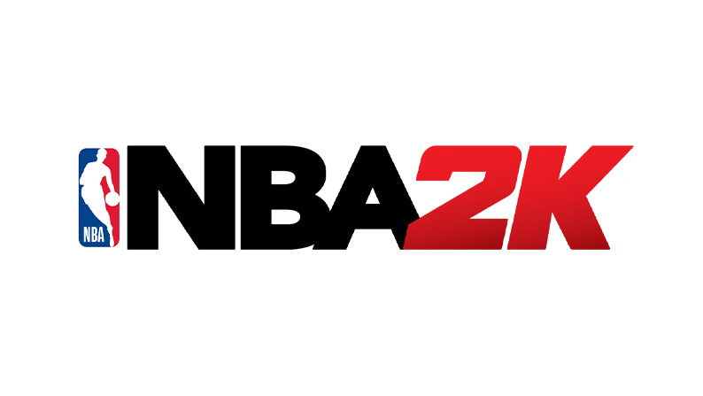
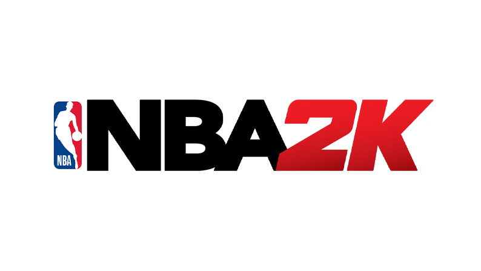

NBA 2k16
I have played a lot of NBA 2k games over the years but 2k16 was definitely my favorite. My favorite game modes to play were MyCareer and MyPark. I still play NBA 2k to this day and enjoy the variety of game modes.
I have played a lot of NBA 2k games over the years but 2k16 was definitely my favorite. My favorite game modes to play were MyCareer and MyPark. I still play NBA 2k to this day and enjoy the variety of game modes.
